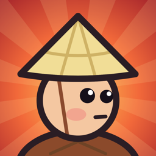
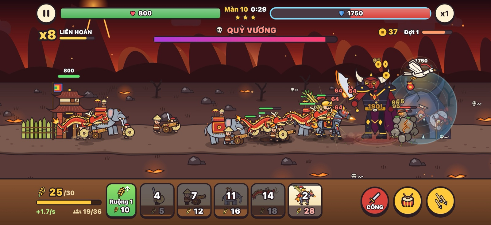

Chiến Binh Giữ Làng
Thả quân giữ làng, diệt yêu ma

Về trò chơi
Yêu ma tràn về, cổng làng lung lay. Bạn dẫn dân làng đội nón lá, voi chiến, Rồng Lửa và Thánh Gióng đi đánh đuổi yêu quái trong một game chiến thuật thả quân theo làn, lấy cảm hứng từ truyền thuyết Việt.
- 11 chiến binh, 10 loại yêu quái và 5 con trùm.
- 30 màn chia 3 chương: Giữ Làng, Truy Kích, Vực Thẳm.
- Chơi một mình, không cần tài khoản, chơi được khi không có mạng.
- Miễn phí, không có mua hàng trong ứng dụng. Game có quảng cáo.
Hỗ trợ
Gặp lỗi, có góp ý hoặc cần giúp đỡ, hãy viết thư cho chúng tôi:
Xin kèm tên máy, phiên bản iOS và màn chơi đang gặp vấn đề để chúng tôi xử lý nhanh hơn.
Câu hỏi thường gặp
- Tiến trình chơi được lưu ở đâu?
- Trên chính thiết bị của bạn. Gỡ game sẽ xoá tiến trình; game chưa có đồng bộ giữa các máy.
- Muốn chơi lại từ đầu thì làm thế nào?
- Ở trang chủ, chạm dòng "Chơi lại từ đầu" ở góc dưới bên phải rồi xác nhận.
- Tắt nhạc hoặc tiếng động ở đâu?
- Hai nút hình loa và nốt nhạc ở góc trên bên phải trang chủ.
- Có bắt buộc xem quảng cáo không?
- Quảng cáo có thưởng là tuỳ bạn chọn xem. Quảng cáo toàn màn hình chỉ xuất hiện sau khi bạn đã thắng vài màn và không bao giờ chen vào giữa trận.
- Đổi lựa chọn "cho phép theo dõi" ở đâu?
- Trên iPhone: Cài đặt → Quyền riêng tư & Bảo mật → Theo dõi.